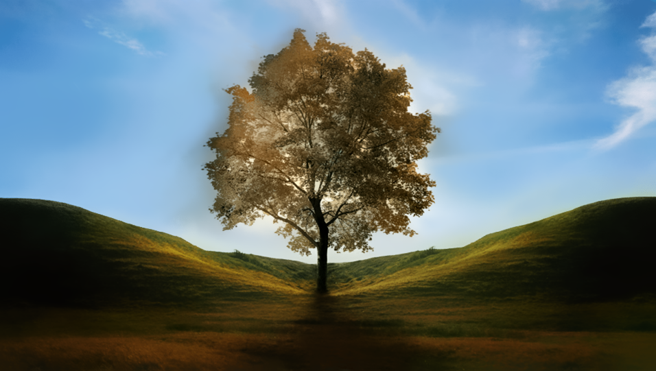

Style Transfer
label을 이용한 전환법
label이란 이미지에서 원하는 부분을 선택한 것입니다. 사람, 동물, 배경 등 다양한 것을 label로 지정할 수 있습니다. 지금부터 label을 활용해서 전환하는 방법을 알아보겠습니다.
먼저 Style Transfer를 하고자 하는 두 장의 이미지를 준비합니다. 한 장은 Content Image로 결과 이미지의 주된 모양을 구성할 이미지이고, 나머지 한 장은 Style Image로 Content Image에 적용할 Style을 구성하는 이미지 입니다. 이미지 준비를 모두 마쳤으면 labelme 설치법을 참고해 labelme를 실행합니다. 그 후 왼쪽 상단에 Open을 클릭해 label을 지정하고자 하는 이미지를 선택합니다.
그러면 위 그림과 같이 선택한 이미지가 뜹니다. 그 후 좌측에 있는 Create Polygon을 선택합니다. 그러면 마우스 커서가 십자 모양으로 바뀌는데 이제 이미지에서 점을 찍어가며 원하는 label을 설정합니다.
이때 마지막 점은 처음에 찍은 점의 위치로 돌아와야 합니다.
그러면 다음과 같이 네모난 창이 뜨는데 이곳에 설정한 label의 이름을 지정합니다. 이 때 이름은 1, 2, 3순으로 지정해 주는 것이 좋습니다. 저는 나무를 1, 땅을 2, 하늘을 3으로 지정했습니다.
label 설정을 모두 마쳤으니 이제 왼쪽에 Save를 눌러 저장합니다. 파일 이름은 구별하기 쉽게 content1이라는 이름으로 저장했습니다.
마찬가지로 Style Image에 대해서도 label을 지정합니다. 이때 주의할 점은 Content 이미지에 설정한 label과 같게 나무에 스타일을 적용할 label을 1, 땅에 적용할 label을 2, 하늘에 적용할 label을 3으로 저장합니다.
두 이미지 모두 label을 지정했으면 이제 전환을 할 차례입니다. 전환하기에서 전환할 파일을 모두 넣고 전환하기를 누릅니다. 이때 배경 변환 정도에서 배경이란 어떤 레이블에도 속하지 않는 빈 공간을 뜻합니다. 해당 사항이 없으면 그대로 두면 됩니다.

짜잔! 그대로 전환한 결과입니다.
그런데 우리는 이 결과에서 더 나아가 label별로 변환하는 정도를 조절할 수 있습니다. 아까 전환하기에서 파일을 다 넣고 2,3번 레이블 변환 정도를 0으로 하고 전환하겠습니다.

다른점이 보이시나요? 나무만 변환되고 나머지 땅과 하늘은 원본 이미지와 같습니다. 이처럼 원하는 레이블만 전환을 하거나(변환 정도 1) 안하도록(변환 정도 2) 조절할 수 있습니다. 더 강하게 변환을 하고 싶을 땐 1보다 큰 정도로 전환하거나 0보다 낮은 수로 전환하면 독특한 이미지가 생성됩니다.